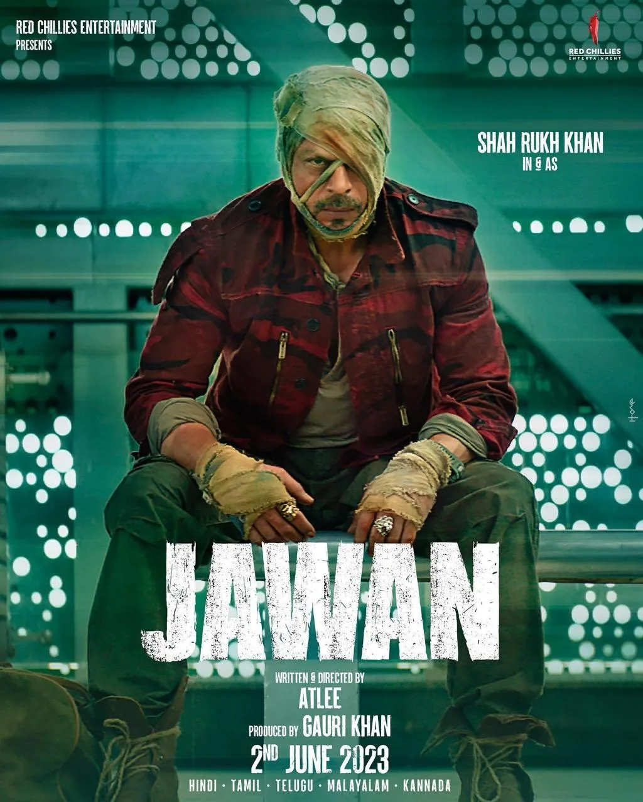

Part V · The Resurrection, 2023 · 26 of 57
Chapter 24 · Jawan: the fire
The second film of the year was his own. Jawan, Atlee’s Hindi debut, produced by Gauri Khan for Red Chillies on a reported budget of ₹300 crore, opened on 7 September 2023 with ₹75.4 crore net in India, a record for a Hindi film. Its pre-release event was held in Chennai on 30 August, at a college, not a press hall. (Fact. Wikipedia: Jawan) It grossed ₹1,148.32 crore worldwide, the highest-grossing Indian film of 2023 and the highest-grossing Hindi film in India. (Fact. same source, citing Bollywood Hungama; Madhyamam counted ₹1,138 crore by week six)

Jawan (2023)
Jawan: first day, first show, September 2023. (Images: Final Thesis archive)
Two years later it won him his first National Film Award for Best Actor, announced on 1 August 2025 and presented by President Droupadi Murmu on 23 September 2025, shared with Vikrant Massey, thirty-three years after Deewana. (Fact. The Statesman) His message to his fans after the announcement, recorded with an injured arm: “just keep the popcorn ready.” (Fact. IANS, 1 Aug 2025)